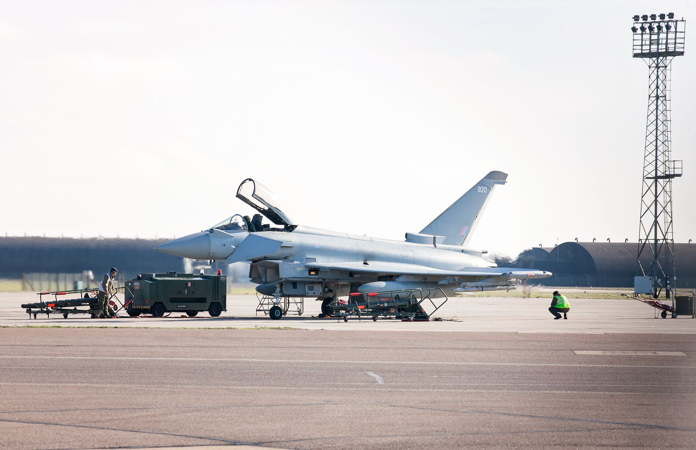

The charges and the investigation
Authorities have officially brought charges against two individuals following a complex investigation into a security breach involving RAF Fairford. The incident, which has drawn significant attention from national security agencies, involves allegations of an attempt to assist the Iranian government during a specific incident at the airbase. This development marks a critical turning point in a case that has been under intense scrutiny for several months.
The individuals involved are currently facing legal proceedings that could have profound implications for UK-Iran relations and domestic counter-intelligence strategies. Investigators have been working to piece together the timeline of events that led to the alleged plot, focusing on how the coordination with foreign entities was attempted within British territory. The complexity of the case suggests a high level of premeditation and sophistication in the alleged activities.
Details of the RAF Fairford incident
RAF Fairford is a vital strategic location for the United Kingdom, often serving as a key hub for international aviation and military logistics. Any breach of security at such a high-profile facility is treated with the utmost seriousness by the Ministry of Defence and intelligence services. The incident in question has raised questions about the vulnerability of critical infrastructure to foreign interference and covert operations.
While the full specifics of the incident remain partially classified due to national security concerns, the core of the allegation involves an attempt to provide assistance to Iranian interests. This assistance was reportedly intended to coincide with a specific event at the base, suggesting a synchronized effort to exploit a moment of operational activity or vulnerability.
National security implications
The implications of this case extend far beyond the immediate legal charges. It highlights the evolving nature of hybrid threats where foreign intelligence services may attempt to use local actors to achieve strategic goals. This incident serves as a stark reminder of the ongoing challenges faced by intelligence agencies in identifying and neutralizing subtle plots that aim to undermine national security from within.
The security of our military installations is paramount, and any attempt to compromise these sites through foreign influence will be met with the full force of the law.
Security experts suggest that this case may lead to a review of how personnel and visitors are monitored at sensitive military sites. The possibility of domestic actors being recruited or influenced by foreign powers is a growing concern for policymakers in London and across the Atlantic. As geopolitical tensions rise, the ability to detect these low-profile operations becomes even more critical for maintaining stability.
Global political context
To understand why this incident is so significant, one must look at the broader geopolitical relationship between the United Kingdom and Iran. Relations have been strained for years, characterized by sanctions, diplomatic disputes, and concerns over regional stability in the Middle East. An alleged plot of this nature adds another layer of complexity to an already volatile international landscape.
The intersection of domestic security and international diplomacy means that the outcome of this legal case could influence future foreign policy decisions. If the evidence presented in court demonstrates a coordinated effort by a foreign state, it could lead to increased diplomatic pressure or further economic sanctions. The world is watching closely to see how the UK government responds to these alleged provocations.
Looking at broader political shifts
While the RAF Fairford case is a matter of national security, it is part of a larger global trend where political stability and foreign influence are constantly being tested. From high-stakes elections to intelligence battles, the way leadership is secured and maintained is a recurring theme in modern geopolitics. Understanding these patterns helps us make sense of the chaotic news cycles we experience today.
For those interested in how political movements shape the landscape of a nation, studying different regional examples can provide valuable context. For instance, if you are interested in the dynamics of political power and public sentiment, you might find our analysis of How Lula da Silva Won the Brazilian Election Battle at https://dhyey.bond/blog/how-lula-da-silva-won-the-brazilian-election-battle/ to be an insightful read. Much like the current UK situation, political outcomes are often driven by complex internal and external forces.
See Also
If you enjoyed this Current Events article, check out How Lula da Silva Won the Brazilian Election Battle for more useful reading.